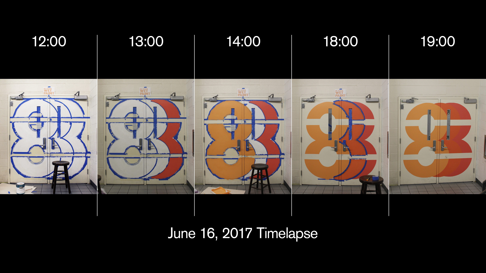
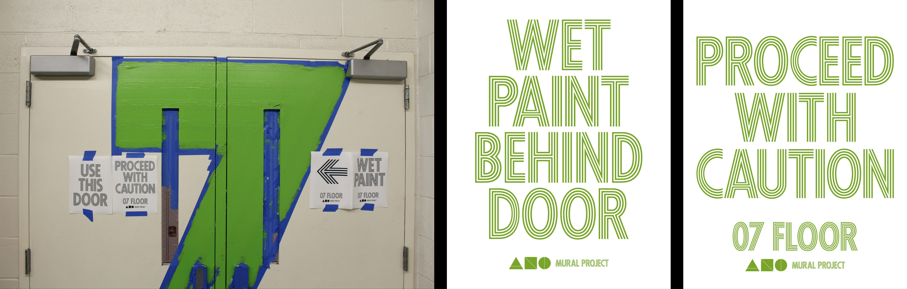

High School of Art & Design Wayfinding Project
Environmental Graphics
Branding
2016–17
The High School of Art & Design Wayfinding Project aimed to improve circulation, ease of navigation and sight lines within the twelve floor building in its staircase. Using a design system based around custom, modified versions of various weights of Futura, all floors evoke a different design meant to reflect the different focuses on each floor.


